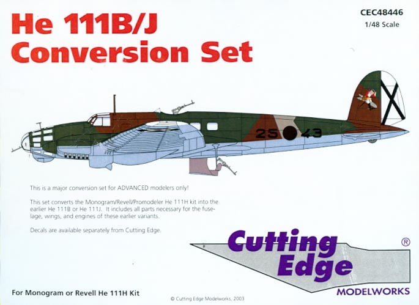
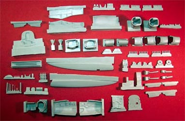
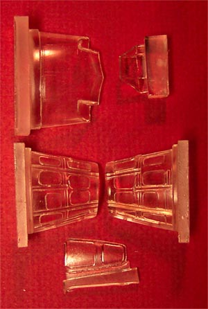
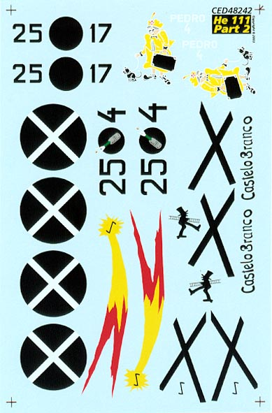
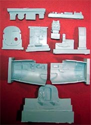
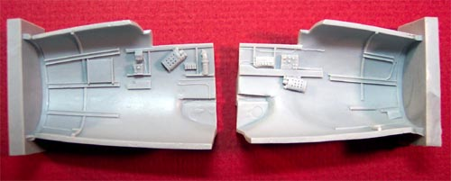

{kind=link}
{kind=link}


Cutting Edge Model Works 1/48 resin He-111B/J conversion set

Kit # CEC 48466 MSRP $69.99
Images and text Copyright � 2003 by Matt Swan
This kit is designed to work with the Monogram He-111H 4/5 kits but the modeler is strongly cautioned to not attempt this conversion with the Monogram He-111H 22 kit which includes the V-1 flying bomb. The H 22 version of the aircraft features a dorsal turret rather than a dustbin gun position and will require extensive scratch work to convert to a pencil nose aircraft. I have previously covered the developmental history of the He-111 aircraft series and you can read about that along with a review of the base kit for this conversion at the He-111H 4/5 kit review. You can click on the parts breakdown image for a larger picture.

I don�t think Dave Klaus (Cutting Edge) is being given enough credit or respect for his development and production of this kit. I�ve heard modelers complain about the lack of fabric wing panel texture or that the kit lacks a curved trailing edge piece (instructions are given for this modification) but regardless, this is a very nice, very extensive conversion and my feelings are that when you (the complainers) produce and market something better then you can gripe about Dave�s production, until then, shut up and enjoy what we have. And Dave is the first to admit that documentation for this version of the aircraft is hard to find and hardly accurate anyway. Sorry for the rant.
The box cover states that this is for ADVANCED modelers only and the instructions repeat this several times and suggest that if you are not an advanced modeler then you should put this back on the shelf. After looking through the box, reading the directions and looking over the base kit I have to agree with this assessment completely. If you do not already have some conversion work under your belt as well as some resin work, do not attempt this conversion.
Okay, with all of that out of the way, let us take a look in the box. The box itself is a two-piece box of heavy cardboard construction, lined with bubble wrap containing several zip-lock bags full of resin parts. The clear parts are packaged in a seperate hard plastic container in the box with styrofoam peanut pack material wedged in there to prevent shifting and parts damage. There is also a fair amount of peanut pack scattered around in the main box to help cushion the parts in shipment. It seems to have works as I have no damaged pieces. The parts are cast from a medium gray resin that is not brittle and cuts well with a razor. Each piece has a fairly large casting sprue but none of those sprues appear to be located in a position that would cause loss of detail during separation. All the pieces show very nice detail and finely recessed panel lines. Upon a close examination of the parts I could find no evidence of micro-holes in any of the pieces and could find no casting defects.

Something that is, at this time, unique to Cutting Edge is the inclusion of clear resin pieces instead of the standard clear vacuform parts. While I have seen one of these parts in the past in the B-24 Ford Nose conversion I have yet to actually use one. They appear to need a good polish and coating of Future prior to installation and are fairly thick in construction. While this does seem to make them much more durable than the conventional vac canopies it does create a very non-scale thickness. While I�m on the subject of the clear parts, CE has included a large sheet of Black Magic masks for not only the exterior but the interior as well. This is a welcome addition in my book. I can recall thinking this would have been a great idea when I was looking through the HiPM Bv-141 kit.
The kit includes four pages of instructions with assembly pictures. The instructions talk about things like cutting the kit wing leading edges off at the indicated panel lines but don�t do a good job of indicating the panel lines. It is apparent that the modeler will have to study the conversion parts and the kit parts intensely before making any cuts. One item that I found to be useful were some pictures of the conversion on Hyperscale that illustrated the wing and engine cowling assemblies. I think these were provided by CE and wonder why copies were not included with the kit � would have made life a little easier.

The kit includes such nifty items as replacements for the wing leading edges, replacement engine nacelles, lots of cockpit interior goodies, some very nicely detailed seats with molded in seatbelts, nicely cast exhaust stacks and radiator inserts. The belly gun position includes replacement floor pans, retractable dustbin mounting and another nicely detailed seat but uses the kit ventral gun.
This conversion kit does not include any decals but does recommend several sets that are available from CE. I have chosen decal set # 48242, Pedros in Spain for the �B� version. This particular sheet has an MSRP of $8.99 USD and includes markings for two aircraft. These aircraft are He-111B 25�17 with the comet insignia on the fuselage and a chimney sweep insignia on the fin and He-111B, 25�4, Pedro 4 with an old woman walking a dog insignia on the fin; both aircraft are from K/88 of the Legion Kondor. One aircraft is in an overall gray with the comet insignia while the second displays a very interesting tricolor splinter scheme. Both look very nice and the temptation to acquire another kit so I can do both is strong � Dave, you devil you.
The decal quality is excellent, registry is right on the money and color density looks to be very good. The decals do not appear to be very thick and will most likely behave well with setting solutions � that�s an educated guess as I have not had an opportunity to use any of them yet. I will need to hang onto the kit sheet of decals for the basic stencils and wing walk markings. The decals include painting instructions for both aircraft featured with the correct RLM paint numbers as well as Federal Standard color cross references.
At the moment the He-111 kits are out of production at Monogram but if you know anything about this company you may realize that the kit will most definitely be reissued many times so if you have to have one right now � go to the collectors tables or Ebay. If you have the patience, buy the conversion kit or more than one if you care and wait for the inevitable reissue from Monogram, and don�t forget to stock up on the decals also.
With that, I�ll leave you to contemplate these close-up shots of the main cockpit pieces and nose side walls �..


Click on the left hand picture for a larger image